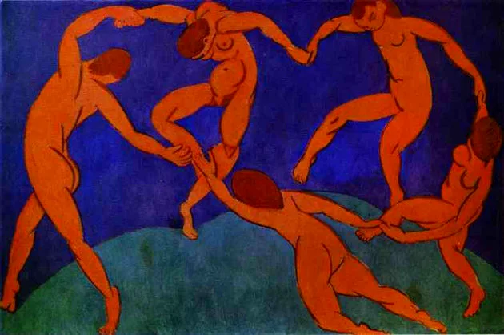

AS VANGUARDAS ARTÍSTICAS EUROPÉIAS
As vanguardas artísticas européias representam uma grande marca na história da arte. Uma das suas principais características foi a de buscar novas formas de expressões ou romper o estilo da arte que vinha se aplicando. A vanguarda vinha apresentando algo novo, moderno, e por esses motivos foi fazendo história na arte, além de inspirar outros países e mudar a forma de pensar e agir da sociedade. O impressionismo, por exemplo, surgiu na França no final do século XIX e foi marcado pela ênfase na observação direta da natureza, pela utilização de cores claras e pela técnica de pinceladas rápidas e soltas. O cubismo, por sua vez, foi um movimento que teve origem em Paris no início do século XX e se caracterizou pela decomposição da imagem em formas geométricas, resultando em obras abstratas e fragmentadas.
FUTURISMO
O Futurismo foi um movimento artístico que surgiu na Itália no começo do século XX, que valorizava a velocidade, a máquina e a energia da vida moderna, e tinha como objetivo a destruição das tradições artísticas do passado. Em contrapartida, o Dadaísmo nasceu em Zurique durante a Primeira Guerra Mundial, como uma forma de protesto contra a guerra e a sociedade burguesa. Este movimento artístico utilizava técnicas de colagem, montagem e ready-made em suas obras para criar um efeito de choque e contestação.
Futurismo surgido na Itália, teve como principal representante Filippo Tommaso Marinetti. Defendia a modernidade, o progresso e a máquina, e era marcado pela utilização de formas dinâmicas e cores vibrantes.
Cubismo: surgido na França, teve como principais representantes Pablo Picasso e Georges Braque. Caracterizou-se pela representação da realidade por meio de formas geométricas.
Dadaísmo: surgiu na Suíça, tendo como principais representantes Tristan Tzara e Marcel Duchamp. Caracterizou-se pela irreverência, pelo absurdo e pelo questionamento das convenções artísticas.
Surrealismo: surgiu na França, tendo como principais representantes André Breton e Salvador Dalí. Buscava explorar o inconsciente e os sonhos, e utilizava imagens surreais e simbólicas.
Expressionismo: surgiu na Alemanha, teve como principais representantes Wassily Kandinsky e Franz Marc. Buscava expressar emoções intensas e subjetivas, e utilizava formas distorcidas e cores vibrantes.
Esses são alguns detalhes e uma breve história das Vanguardas Artísticas Européias, tendo em base como o seus tópicos abordados o Cubismo, Dadaísmo, Surrealismo, Futurismo e Expressionismo.
https://www.todamateria.com.br/vanguardas-europeias/. Acessado em 31 de março de 2023